論文：Training Dynamics Impact Post-Training Quantization Robustness · arXiv 2510.06213
選題說明：discovery 腳本遇 arXiv API 429，改用 web search 從 ICLR 2026 proceedings 選出 · Reviewer 資料：未取得
PTQ 誤差在 learning rate 開始衰減時才暴增，與看過多少 token 關係不大。先前「資料越多越難量化」的 scaling 結論，主要是被 LR schedule 混淆。大一點的 LR、weight averaging、大一點的 weight decay 都能讓模型更好量化，共同的解釋是收斂到更平的極小值。
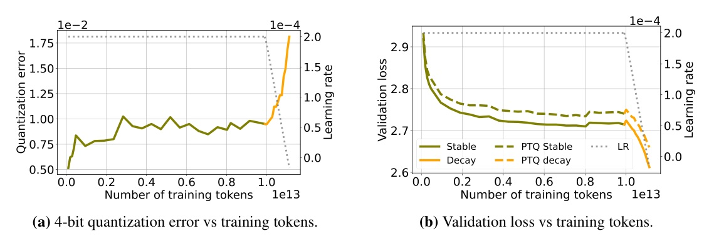
量化方法
指標
| 模型家族 | 參數量 | 訓練 tokens | LR schedule 特色 |
|---|---|---|---|
| OLMo | 1B / 7B | 2.5–3T | — |
| OLMo2 | 1B / 7B / 13B / 32B | 4–6T | cosine → 短而陡的 linear decay，最終 model soup |
| SmolLM3 | 3B | 11T | WSD；另含 post-training 各階段 |
| Apertus | 8B | 15T | WSD |
| Open-science | 1.3B | 1T | WSD，多種 token budget |
| Amber | 7B | 1.3T | — |
全部以 GPTQ 量化到 3 / 4 bit；完整結果見 Appendix B。
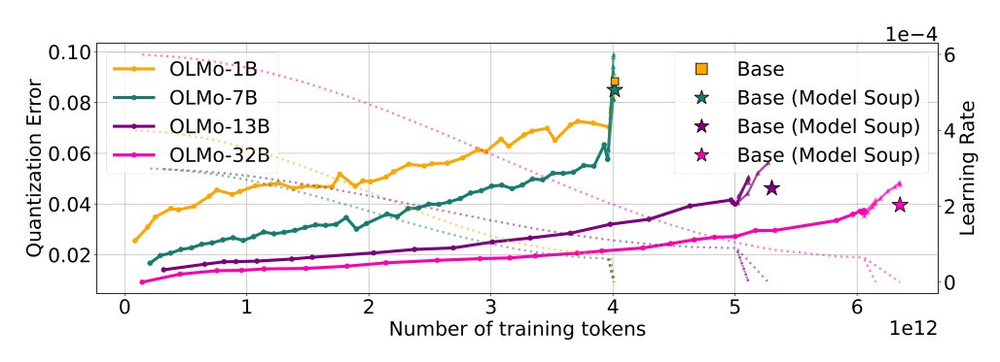
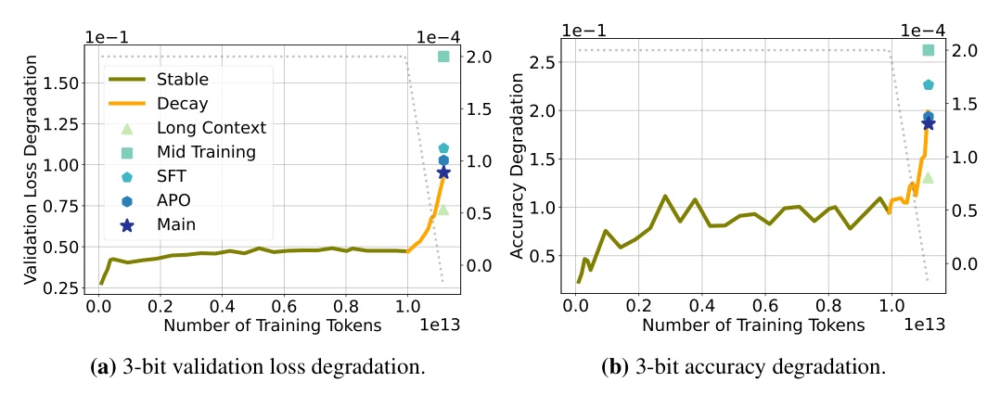
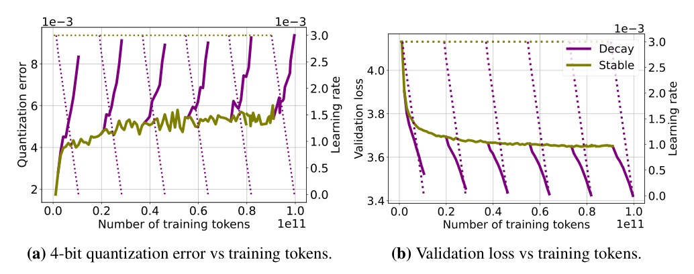
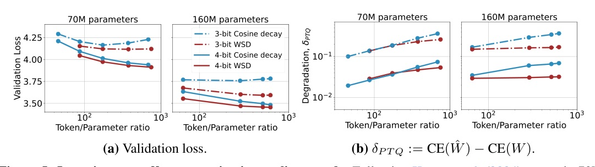
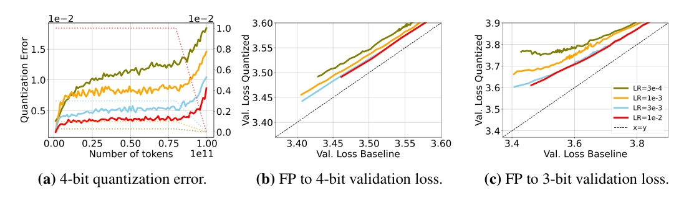
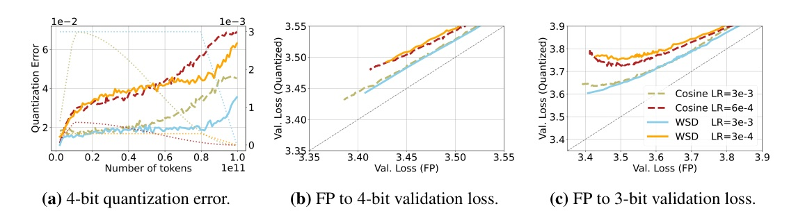
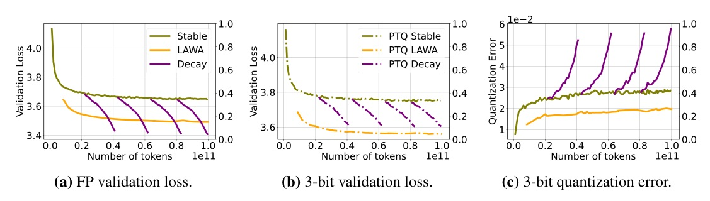
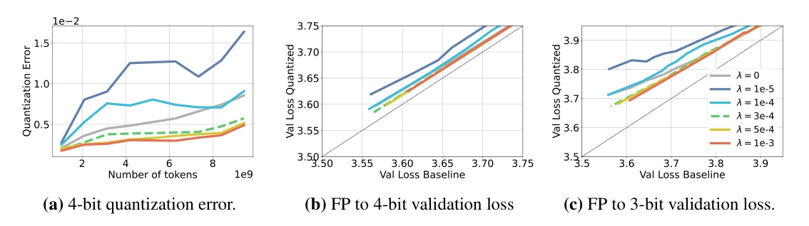
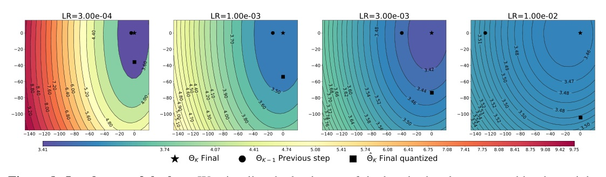
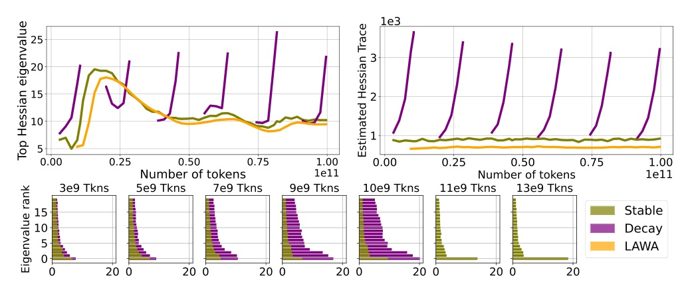
LR 衰減讓模型走進 loss landscape 更陡的區域，對量化這類權重擾動更敏感；大 LR、weight averaging、model soup 都導向更平的極小值，因此更耐量化。
這是相關性觀察加上的假說，論文沒有給出因果證明。
| 情境 | 論文的發現 |
|---|---|
| 兩個 LR 的 FP 效果差不多 | 選大的；量化後更好，論文中沒觀察到代價 |
| Release 前要做 cooldown | Cooldown 會推高 PTQ 誤差；可另外評估 LAWA / model soup 的量化版本 |
| 推導量化 scaling law | 只取 LR 退火完成的 checkpoint，避免把 schedule 效應算到資料量頭上 |
| Weight decay 的選擇 | FP 相近時，λ 大一點較好量化（效果比 LR 小） |
| 超參數搜尋流程 | 把 PTQ 誤差當成例行監控的指標之一 |
此頁為編者推論，與論文內容分開標示。
Specifically, once learning rates decay, validation loss and quantization error diverge, largely independent of training data scale.
具體來說，一旦 learning rate 開始衰減，validation loss 與量化誤差就分道揚鑣，而且大致與訓練資料量無關。Abstract, p.1
We argue that these works did not sufficiently control for a key confounder, namely the optimization dynamics induced by the learning rate schedule.
我們認為這些研究沒有充分控制一個關鍵混淆因子，也就是LR schedule 造成的最佳化動態。§4.2, p.6
We hypothesize that, as the learning rate decays, the model traverses a sharper region of the loss landscape, making it more sensitive to perturbations such as quantization.
我們假設 LR 衰減時，模型會進入 loss landscape 更陡的區域，因而對量化這類擾動更敏感。§6.2, p.10
| 項目 | 設定 |
|---|---|
| 模型 | Pythia-160M（另有 70M） |
| 資料 | FineWebEdu，最多 100B tokens |
| 硬體 | 最多 8× A100-80GB |
| 序列長度 / batch | 2048 / 0.5M tokens |
| Optimizer | AdamW，β1 = 0.9、β2 = 0.95、weight decay 0.1、grad clip 1 |
| Schedule（Fig.4） | WSD，峰值 3e-3，warmup 1900 步，cooldown 佔 10%，衰減到 0 |
| LAWA | 每 500 步收 checkpoint，窗口 5，均勻平均 |
| Validation | RefinedWeb held-out split；下游用 LM-eval-harness + vLLM |
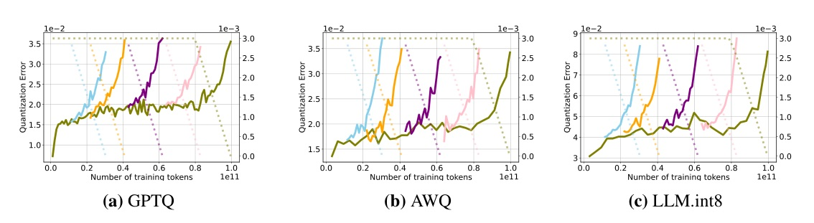
來源：Training Dynamics Impact Post-Training Quantization Robustness · Catalan-Tatjer, Ajroldi, Geiping · arXiv 2510.06213 · ICLR 2026